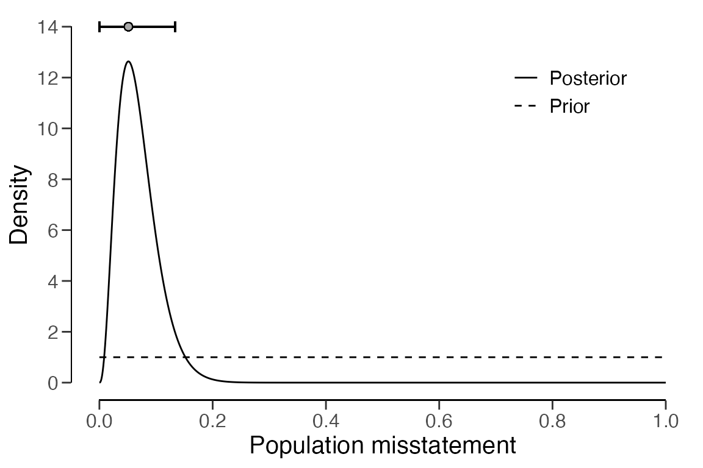
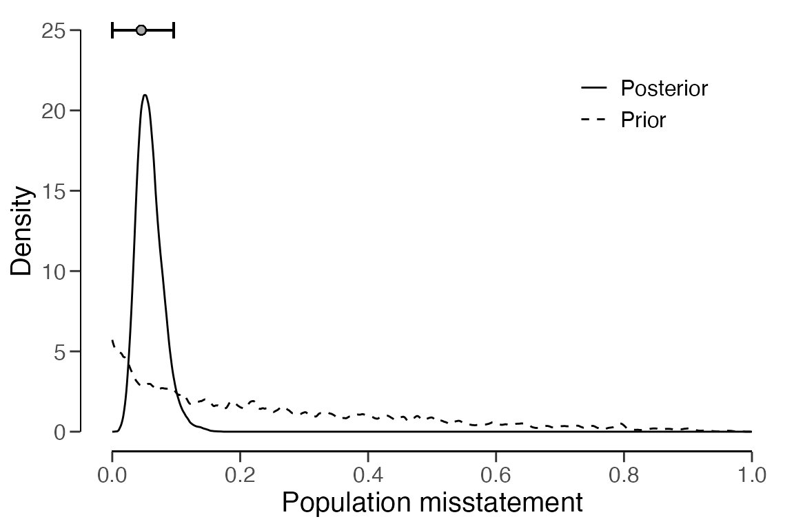

Evaluating samples with partial misstatements
Koen Derks
2023-11-21
Source:vignettes/sample-evaluation-partial.Rmd
sample-evaluation-partial.RmdIntroduction
This vignette demonstrates how to efficiently evaluate a sample with
non-binary misstatements using the evaluation() function
from the jfa package.

In auditing, the goal of the evaluation is typically to estimate the misstatement in the population based on a sample, or to test the misstatement in the population against a critical upper limit, referred to as the performance materiality.
Modeling partial misstatements
Partial misstatements occur when there is only a partial discrepancy between the true value of an item in the sample and its recorded value. From a data perspective, this implies that the misstatements are sometimes non-binary. However, there is often a large amount of correct items in the population. This can be taken into account when modeling the misstatement in the population, thereby increasing efficiency.
As an example, we look at a realistic sample from a financial audit. The sample consists of 50 items, each having a recorded (book) value and a true (audit) value.
set.seed(1)
data("allowances")
population <- allowances[allowances$bookValue > 0 & !is.na(allowances$auditValue) & allowances$auditValue > 0, c(1, 3, 4)]
sample <- population[sample.int(nrow(population), size = 50), ]
head(sample)## item bookValue auditValue
## 3709 3709 817.7943 817.7943
## 2955 2955 3084.5041 2313.3781
## 554 554 330.1700 330.1700
## 3471 3471 499.4546 499.4546
## 1667 1667 4914.8513 4914.8513
## 1230 1230 995.0000 995.0000Beta distribution
The simplest way to analyze partial misstatements is to preted they
can be aggregated and use sum of partial misstatements (i.e., the total
taint) to project to the population. Because of its simplicity, it is
common practice to do this. In the Bayesian framework this would entail
using a prior and updating this prior with the aggregated information
from the sample. For the binomial likelihood, this is done using
method = "binomial" in combination with
prior = TRUE.
eval2 <- evaluation(method = "binomial", data = sample, values = "bookValue", values.audit = "auditValue", prior = TRUE)
print(eval2)##
## Bayesian Audit Sample Evaluation
##
## data: sample
## number of errors = 10, number of samples = 50, taint = 2.5607
## 95 percent credible interval:
## 0.0000000 0.1335162
## most likely estimate:
## 0.051214
## results obtained via method 'binomial' + 'prior'As can be seen from the output, the most likely misstatement is
estimated to be 5.12 percent, with a 95 percent upper bound of 13.3
percent. Note that this estimate is not very efficient, as it does not
take into account the information in the distribution of the taints. The
prior and posterior distribution can be visualized via the
plot() function.
plot(eval2, type = "posterior")
Stringer bound
The Stringer bound is a method to improve efficiency by taking into
account the differences between the partial misstatements (i.e.,
taints). While conservative, this method can reduce the upper bound on
the misstatement compared to the beta distribution. This can be done
using method = "stringer".
eval1 <- evaluation(method = "stringer", data = sample, values = "bookValue", values.audit = "auditValue")
print(eval1)##
## Classical Audit Sample Evaluation
##
## data: sample
## number of errors = 10, number of samples = 50, taint = 2.5607
## 95 percent confidence interval:
## 0.0000000 0.1280455
## most likely estimate:
## 0.051214
## results obtained via method 'stringer.binomial'As can be seen from the output, the most likely misstatement is estimated to be 5.12 percent, with a 95 percent upper bound of 12.8 percent. Since the upper bound of the Stringer method is lower than that of the beta distribution, the Stringer bound is more efficient.
Zero-inflated beta distribution
When compared to the Stringer bound and the beta distribution,
efficiency can be bolstered even further by explicitly modeling the
probability of a taint being zero. The reason that this is good practice
is because most of the observed taints will be zero in practice. This
can be done using method = "inflated.beta", which requires
that prior = TRUE or an object created via the
auditPrior() function. Note that this method also requires
that you specify the number of items (N.items) and the
number of monetary units (N.units) in the population.
eval3 <- evaluation(
method = "inflated.beta", data = sample, values = "bookValue", values.audit = "auditValue",
N.items = nrow(population), N.units = sum(population$bookValue), prior = TRUE
)
print(eval3)##
## Bayesian Audit Sample Evaluation
##
## data: sample
## number of errors = 10, number of samples = 50, taint = 2.5607
## 95 percent credible interval:
## 0.00000000 0.09568718
## most likely estimate:
## 0.0453
## results obtained via method 'inflated.beta' + 'prior'As can be seen from the output, the most likely misstatement is
estimated to be around 4 percent, with a 95 percent upper bound of
around 10 percent. The prior and posterior distribution can be
visualized via the plot() function.
plot(eval3, type = "posterior")
Zero-inflated Poisson distribution
Depending on whether the auditor thinks it is likely that the taints
follow a beta distribution, they can also decide that it is more likely
that the misstatements themselves can be described in terms of a Poisson
process. With the option method = "inflated.poisson", the
auditor can apply the assumption of inflated zeros to the misstatement
amounts.
eval4 <- evaluation(
method = "inflated.poisson", data = sample, values = "bookValue", values.audit = "auditValue",
N.items = nrow(population), N.units = sum(population$bookValue), prior = TRUE
)
print(eval4)##
## Bayesian Audit Sample Evaluation
##
## data: sample
## number of errors = 10, number of samples = 50, taint = 2.5607
## 95 percent credible interval:
## 0.00000000 0.06588473
## most likely estimate:
## 0.0423
## results obtained via method 'inflated.poisson' + 'prior'As can be seen from the output, the most likely misstatement is
estimated to be around 4 percent, with a 95 percent upper bound of
around 7 percent. The prior and posterior distribution can be visualized
via the plot() function.
plot(eval4, type = "posterior")